유통관리사-2급 (2021-11-06 기출문제)
1과목: 유통물류일반
1. 공급자주도형재고관리(VMI:Vendor Managed Inventory)에 대한 내용으로 옳은 것은?
- VMI는 공급자가 고객사를 위해 제공하는 가치향상 서비스 활동이다.
- VMI는 생산공정의 효율적 관리를 위해 우선순위계획, 능력계획, 우선순위통제관리, 능력통제관리 등을 수행하는 생산관리시스템이다.
- VMI에서는 고객사가 재고를 추적하고, 납품일정과 주문량을 결정한다.
- VMI를 활용하면 공급자는 재고관리에 소요되는 인력이나 시간 등 비용절감 효과를 얻을 수 있다.
- CMI(Co-Managed Inventory)보다 공급자와 고객사가 더 협력적인 형태로 발전한 것이 VMI이다.
(정답률: 40%)

2. 직무분석과 직무평가에 대한 설명으로 옳지 않은 것은?
- 직무분석이란 과업과 직무를 수행하는데 요구되는 인적 자질에 의해 직무의 내용을 정의하는 공식적 절차를 말한다.
- 직무분석에서 직무요건 중 인적 요건을 중심으로 정리한 문서를 직무기술서라고 한다.
- 직무분석은 효과적인 인적자원관리를 위해 선행되어야 할 기초적인 작업이다.
- 직무평가는 직무를 일정한 기준에 의거하여 서로 비교 함으로써 상대적 가치를 결정하는 체계적인 활동을 말한다.
- 직무평가는 직무의 가치에 따라 공정한 임금지급 기준, 합리적인 인력의 확보 및 배치, 인력의 개발 등을 결정할 때 이용된다.
(정답률: 61%)
3. 조직문화에 대한 설명으로 옳지 않은 것은?
- 한 조직의 구성원들이 공유하는 가치관, 신념, 이념, 지식 등을 포함하는 종합적인 개념이다.
- 특정 조직 구성원들의 사고판단과 행동의 기본 전제로 작용하는 비가시적인 지식적, 정서적, 가치적 요소이다.
- 조직구성원들이 공통적으로 생각하는 방법, 느끼는 방향, 공통의 행동 패턴의 체계이다.
- 조직 외부 자극에 대한 조직 전체의 반응과 임직원의 가치의식 및 행동을 결정하는 요인을 포함한다.
- 다른 기업의 제도나 시스템을 벤치마킹하는 경우 그 조직문화적가치도 쉽게 이전된다.
(정답률: 68%)
4. 유통경로구조를 결정하기 위해 체크리스트법을 사용할 때 고려해야 할 요인들에 대한 설명으로 옳지 않은 것은?
- 재무적 능력이나 규모 등의 기업요인
- 시장규모와 지역적 집중도 등의 시장요인
- 제품의 크기와 중량 등의 제품요인
- 경영전문성이나 구성원 통제 등에 대한 기업요인
- 구매빈도와 평균 주문량 등의 제품요인
(정답률: 32%)
5. 유통경영환경에 대한 설명으로 옳지 않은 것은?
- 거시환경은 모든 기업에 공통적으로 영향을 미치는 환경이다.
- 과업환경은 기업의 성장과 생존에 직접적 영향을 미치는 환경으로 기업이 어떤 제품이나 서비스를 생산하는 가에 따라 달라진다.
- 인구분포, 출생률과 사망률, 노년층의 비율 등과 같은 인구통계학적인 특성은 사회적 환경으로 거시환경에 속한다.
- 제품과 종업원에 관련된 규제 및 환경규제, 각종 인허가 등과 같은 법과 규범은 정치적, 법률적 환경으로 과업 환경에 속한다.
- 경제적 환경은 기업의 거시환경에 해당된다.
(정답률: 57%)
6. 기업 내에서 일어날 수 있는 각종 윤리상의 문제들에 대한 설명으로 가장 옳지 않은 것은?
- 다른 이해당사자들을 희생하여 회사의 이익을 도모하는 행위는 지양해야 한다.
- 업무 시간에 SNS를 통해 개인활동을 하는 것은 업무시간 남용에 해당되므로 지양해야 한다.
- 고객을 위한 무료 음료나 기념품을 개인적으로 사용하는 것은 지양해야 한다.
- 회사에 손해를 끼칠 수 있는 사안이라면, 중대한 문제라 해도 공익제보를 하는 것은 지양해야 한다.
- 다른 구성원들에게 위협적인 행위나 무례한 행동을 하는 것은 지양해야 한다.
(정답률: 74%)
7. 중간상이 있음으로 인해 각 경로구성원에 의해 보관되는 제품의 총량을 감소시킨다는 내용이 의미하는 중간상의 필요성을 나타내는 것으로 가장 옳은 것은?
- 효용창출의 원리
- 총거래수 최소의 원칙
- 분업의 원리
- 변동비 우위의 원리
- 집중준비의 원리
(정답률: 39%)
8. 최근 유통시장 변화에 대해 기술한 내용으로 옳지 않은 것은?
- 신선식품 배송에 대한 수요가 증가하고 있다.
- 외식업체들은 매장에 설치한 키오스크를 통해 주문을 받음으로써 생산성을 높이고 고객의 이용 경험을 완전히 바꾸는 혁신을 시도하고 있다.
- 온라인 쇼핑 시장의 성장세가 두드러지면서 유통업체의 배송 경쟁이 치열해지고 있다.
- 가공·즉석식품의 판매는 편의점 매출에 긍정적인 영향을 주었다.
- 상품이 고객에게 판매되는 단계마다 여러 물류회사들이 역할을 나누어 서비스를 제공하는 풀필먼트 서비스를 통해 유통 단계가 획기적으로 단축되고 있다.
(정답률: 65%)
9. 아래 글상자의 ㉠, ㉡, ㉢에서 설명하는 유통경로의 효용으로 옳게 짝지어진 것은?
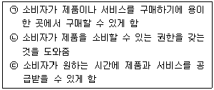
- ㉠ 시간효용, ㉡ 장소효용, ㉢ 소유효용
- ㉠ 장소효용, ㉡ 소유효용, ㉢ 시간효용
- ㉠ 형태효용, ㉡ 소유효용, ㉢ 장소효용
- ㉠ 소유효용, ㉡ 장소효용, ㉢ 형태효용
- ㉠ 장소효용, ㉡ 형태효용, ㉢ 시간효용
(정답률: 76%)
10. 아웃소싱과 인소싱을 비교해 볼 때 아웃소싱의 단점을 설명한 것으로 옳지 않은 것은?
- 부적절한 공급업자를 선정할 수 있는 위험에 노출된다.
- 과다 투자나 과다 물량생산의 위험이 높다.
- 핵심지원활동을 잃을 수도 있다.
- 프로세스 통제권을 잃을 수도 있다.
- 리드타임이 장기화 될 수도 있다.
(정답률: 46%)
11. 아래 글상자에서 설명하는 동기부여 이론으로 옳은 것은?
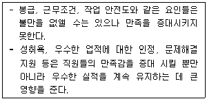
- 매슬로(Maslow)의 욕구단계이론
- 맥그리거(Mcgregor)의 XY이론
- 앨더퍼(Alderfer)의 ERG이론
- 허츠버그(Herzberg)의 두 요인 이론
- 피들러(Fiedler)의 상황적합성이론
(정답률: 48%)
12. 물류의 상충(trade off) 관계에 대한 설명으로 가장 옳지 않은 것은?
- 기업의 물류합리화는 상충관계의 분석이 기본이 된다.
- 기업 내 물류기능과 타 기능 간의 상충관계 역시 효율적 물류관리를 위해 고려해야 한다.
- 제조업자와 운송업자 및 창고업자 등 기업조직과 기업 외 조직간의 상충관계 또한 고려해야한다.
- 상충관계에서 발생하는 문제점을 극복하기 위해서는 물류 흐름을 세분화하여 부분 최적화를 달성해야 한다.
- 배송센터에서 수배송 차량의 수를 늘릴 경우 고객에게 도착하는 배송시간은 짧아지지만 물류비용은 증가하는 경우는 상충관계의 사례에 해당한다.
(정답률: 52%)
13. 식품위생법(법률 제18363호, 2021.7.27., 일부개정) 상, 아래 글상자의 ( )안에 들어갈 용어로 옳게 나열된 것은?
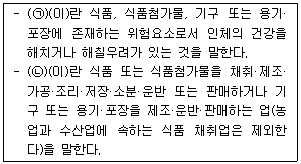
- ㉠ 합성품, ㉡ 식품이력추적관리
- ㉠ 화학적 합성품, ㉡ 공유주방
- ㉠ 위해, ㉡ 영업
- ㉠ 식품위생, ㉡ 영업자
- ㉠ 위험요소, ㉡ 집단급식소
(정답률: 59%)
14. 신용등급이 낮은 기업이 자본을 조달하기 위해 발행하는 것으로 높은 이자율을 지급하지만 상대적으로 높은 위험을 동반하는 채무 수단으로 가장 옳은 것은?
- 변동금리채
- 연속상환채권
- 정크본드
- 무보증채
- 보증채
(정답률: 50%)
15. 리더십에 대한 설명으로 가장 옳지 않은 것은?
- 민주적 리더십은 종업원이 더 많은 것을 알고 있는 전문직인 경우에 효과적이다.
- 독재적 리더십은 긴박한 상황에서 절대적인 복종이 필요한 경우에 효과적이다.
- 독재적 리더십은 숙련되지 않거나 동기부여가 안 된 종업원에게 효과적이다.
- 독재적 리더십은 자신의 지시를 따르게 하기 위해 경제적 보상책을 사용하기도 한다.
- 자유방임적 리더십은 종업원에게 신뢰와 확신을 보여 동기요인을 제공한다.
(정답률: 44%)
16. 앤소프(Ansoff, H. I.)의 성장전략 중 아래 글상자에서 설명하는 전략으로 가장 옳은 것은?
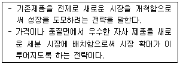
- 시장침투전략
- 제품개발전략
- 시장개발전략
- 코스트절감전략
- 철수전략
(정답률: 59%)
17. 도매상과 관련된 내용으로 옳지 않은 것은?
- 과일, 야채 등 부패성 식품을 공급하는 트럭도매상은 한정기능도매상에 속한다.
- 한정상품도매상은 완전기능도매상에 속한다.
- 현금무배달도매상은 거래대상소매상이 제한적이기는 하지만 재무적인 위험을 질 염려는 없다는 장점이 있다.
- 직송도매상은 일반관리비와 인건비를 줄일 수 있다는 장점이 있다.
- 몇 가지의 전문품 라인만을 취급하는 전문품도매상은 한정기능도매상에 속한다.
(정답률: 40%)
18. 제3자 물류에 대한 설명으로 가장 옳은 것은?
- 거래기반의 수발주관계
- 운송, 보관 등 물류기능별 서비스 지향
- 일회성 거래관계
- 종합물류서비스 지향
- 정보공유 불필요
(정답률: 48%)
19. 보관 효율화를 위한 기본적인 원칙과 관련된 설명으로 가장 옳지 않은 것은?
- 위치표시의 원칙 – 물품이 보관된 장소와 랙 번호 등을 표시함으로써 보관업무의 효율을 기한다.
- 중량특성의 원칙 - 물품의 중량에 따라 보관 장소의 높낮이를 결정한다.
- 명료성의 원칙 – 보관된 물품을 시각적으로 용이하게 식별할 수 있도록 보관한다.
- 회전대응 보관의 원칙 - 물품의 입출고 빈도에 따라 장소를 달리해서 보관한다.
- 통로대면보관의 원칙 - 유사한 물품끼리 인접해서 보관한다.
(정답률: 70%)
20. 유통산업의 다양한 역할 중 경제적, 사회적 역할로 가장 옳지 않은 것은?
- 생산자와 소비자 간 촉매역할을 한다.
- 고용을 창출한다.
- 물가를 조정한다.
- 경쟁으로 인해 제조업의 발전을 저해한다.
- 소비문화의 창달에 기여한다.
(정답률: 75%)
21. 경로성과를 평가하기 위한 척도의 예가 모두 올바르게 연결된 것은?
- 양적 척도 - 단위당 총 유통비용, 선적비용, 경로과업의 반복화 수준
- 양적 척도 – 신기술의 독특성, 주문처리에서의 오류수, 악성부채비율
- 양적 척도 - 기능적 중복 수준, 가격인하 비율, 선적 오류 비율
- 질적 척도 - 경로통제능력, 경로 내 혁신, 재고부족 방지비용
- 질적 척도 - 시장상황정보의 획득 가능성, 기능적 중복수준, 경로과업의 반복화 수준
(정답률: 55%)
22. 아래 글상자에서 공통적으로 설명하고 있는 유통경영전략 활동으로 가장 옳은 것은?
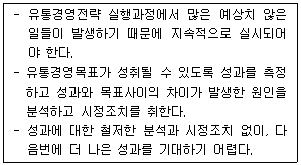
- 유통마케팅 계획수립
- 유통마케팅 실행
- 유통마케팅 위협·기회 분석
- 유통마케팅 통제
- 유통마케팅 포트폴리오 개발
(정답률: 32%)
23. 기업의 의사결정기준을 경제적 이익에 근거한 기업가치인 경제적 부가가치를 중심으로 하는 사업관리기법으로 가장 옳은 것은?
- 상생기업경영
- 크레비즈
- 가치창조경영
- 펀경영
- 지식경영
(정답률: 67%)
24. 제품의 연간 수요량은 4,500개이고 단위 당 원가는 100원이다. 또한 1회 주문비용은 40원이며 평균재고유지비는 원가의 25%를 차지한다. 이 경우 경제적 주문량(EOQ)으로 가장 옳은 것은?
- 100단위
- 110단위
- 120단위
- 1,000단위
- 1,200단위
(정답률: 47%)
25. 공급사슬관리(SCM)의 실행과 관련한 설명으로 가장 옳지 않은 것은?
- 공급업체와 효과적인 커뮤니케이션이 적시에 이루어져야 한다.
- 장기적으로 강력한 파트너십을 구축한다.
- 각종 정보기술의 효과적인 활용보다 인적 네트워크의 활용을 우선시한다.
- 경로 전체를 통합하는 정보시스템의 구축이 중요하다.
- 고객의 가치와 니즈를 이해하고 만족시킨다.
(정답률: 68%)
2과목: 상권분석
26. 상가건물이 지하1층, 지상5층으로 대지면적은 300m2이다. 층별 바닥면적은 각각 200m2로 동일하며 주차장은 지하 1층에 200m2와 지상1층 내부에 100m2로 구성되어 있다. 이 건물의 용적률은?
- 67%
- 233%
- 300%
- 330%
- 466%
(정답률: 44%)
27. 수정Huff모델의 특성과 관련한 설명 중 가장 옳지 않은 것은?
- 수정Huff모델은 실무적 편의를 위해 점포면적과 거리에 대한 민감도를 따로 추정하지 않는다.
- 점포면적과 이동거리에 대한 소비자의 민감도는 '1'과 '-2'로 고정하여 인식한다.
- Huff모델과 같이 점포면적과 점포까지의 거리 두 변수만으로 소비자들의 점포 선택확률을 추정할 수 있다.
- 분석과정에서 상권 내에 거주하는 소비자의 개인별 구매행동 데이터를 활용하여 예측의 정확도를 높인다.
- Huff모델 보다 정확도는 낮을 수 있지만, 일반화하여 쉽게 적용하고 대략적 추정을 가능하게 한 것이다.
(정답률: 33%)
28. 소매점포의 상권범위나 상권형태를 설명한 내용 중에서 가장 옳지 않은 것은?
- 현실에서 관찰되는 상권의 형태는 점포를 중심으로 일정거리 이내를 포함하는 원형으로 나타난다.
- 상품구색이 유사하더라도 판촉활동이나 광고활동의 차이에 따라 점포들 간의 상권범위가 달라진다.
- 입지조건과 점포의 전략에 변화가 없어도 상권의 범위는 다양한 영향요인에 의해 유동적으로 변화하기 마련이다.
- 동일한 지역시장에 입지한 경우에도 점포의 규모에 따라 개별 점포의 상권범위는 차이를 보인다.
- 점포의 규모가 비슷하더라도 업종이나 업태에 따라 점포들의 상권범위는 차이를 보인다.
(정답률: 52%)
29. 지역시장의 수요잠재력을 총체적으로 측정할 수 있는 지표로 많이 이용되는 소매포화지수(IRS)와 시장성장 잠재력지수(MEP)에 대한 설명으로 옳지 않은 것은?
- IRS는 한 지역시장 내에서 특정 소매업태의 단위 매장 면적당 잠재수요를 나타낸다.
- IRS가 낮으면 점포가 초과 공급되어 해당 시장에서의 점포간 경쟁이 치열함을 의미한다.
- IRS의 값이 클수록 공급보다 수요가 상대적으로 많으며 시장의 포화정도가 낮은 것이다.
- 거주자의 지역외구매(outshopping) 정도가 낮으면 MEP가 크게 나타나고 지역시장의 미래 성장가능성은 높은 것이다.
- MEP와 IRS가 모두 높은 지역시장이 가장 매력적인 시장이다.
(정답률: 35%)
30. 현 소유주의 취득일과 매매과정, 압류, 저당권 등의 설정, 해당 건물의 기본내역 등이 기록되어 있는 공부서류로 가장 옳은 것은?
- 등기사항전부증명서
- 건축물대장
- 토지대장
- 토지이용계획확인서
- 지적도
(정답률: 47%)
31. 글상자 안의 내용이 설명하는 상권 및 입지분석방법으로 가장 옳은 것은?
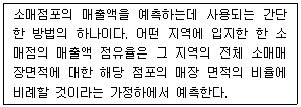
- 체크리스트법
- 유사점포법
- 점포공간매출액비율법
- 확률적상권분석법
- 근접구역법
(정답률: 54%)
32. 상권을 구분하거나 상권별 대응전략을 수립할 때 필수적으로 이해하고 있어야 할 상권의 개념과 일반적 특성을 설명한 내용 중에서 가장 옳지 않은 것은?
- 1차상권이 전략적으로 중요한 이유는 소비자의 밀도가 가장 높은 곳이고 상대적으로 소비자의 충성도가 높으며 1인당 판매액이 가장 큰 핵심적인 지역이기 때문이다.
- 1차상권은 전체상권 중에서 점포에 가장 가까운 지역을 의미하는데 매출액이나 소비자의 수를 기준으로 일반적으로 약 60% 정도까지를 차지하지만 그 비율은 절대적이지 않다.
- 2차상권은 1차상권을 둘러싸는 형태로 주변에 위치하여 매출이나 소비자의 일정비율을 추가로 흡인하는 지역이다.
- 3차상권은 상권으로 인정하는 한계(fringe)가 되는 지역 범위로, 많은 경우 지역적으로 넓게 분산되어 위치하여 소비자의 밀도가 가장 낮다.
- 3차상권은 상권내 소비자의 내점빈도가 1차상권에 비해 높으며 경쟁점포들과 상권중복 또는 상권잠식의 가능성이 높은 지역이다.
(정답률: 62%)
33. 상가건물 임대차보호법(약칭: 상가임대차법)(법률 제17471호, 2020.7.31.,일부개정)에서 규정하는 임차인의 계약갱신 요구에 대한 정당한 거절사유에 해당하지 않는 것은?
- 임차인이 3기의 차임액에 해당하는 금액에 이르도록 차임을 연체한 사실이 있는 경우
- 임차인이 임대인의 동의 없이 목적 건물의 전부 또는 일부를 전대(轉貸)한 경우
- 임차인이 임차한 건물의 전부 또는 일부를 고의나 중대한 과실로 파손한 경우
- 서로 합의하여 임대인이 임차인에게 상당한 보상을 제공한 경우
- 최초의 임대차기간을 포함한 전체 임대차기간이 5년을 초과한 경우
(정답률: 34%)
34. 일반적으로 인간은 이익을 얻는 쪽을 먼저 선택하고자 하는 심리가 있어서 길을 건널 때 처음 만나는 횡단보도를 이용하려고 한다는 법칙으로 가장 옳은 것은?
- 안전우선의 법칙
- 집합의 법칙
- 보증실현의 법칙
- 최단거리 실현의 법칙
- 주동선 우선의 법칙
(정답률: 41%)
35. 아래 글상자는 소비자에 대한 점포의 자연적 노출가능성인 시계성을 평가하는 4가지 요소들을 정리한 것이다. 괄호 안에 들어갈 용어를 나열한 것으로 가장 옳은 것은?
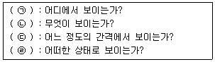
- ㉠ 거리, ㉡ 주제, ㉢ 기점, ㉣ 대상
- ㉠ 거리, ㉡ 대상, ㉢ 기점, ㉣ 주제
- ㉠ 대상, ㉡ 거리, ㉢ 기점, ㉣ 주제
- ㉠ 기점, ㉡ 대상, ㉢ 거리, ㉣ 주제
- ㉠ 기점, ㉡ 주제, ㉢ 거리, ㉣ 대상
(정답률: 50%)
36. 상권분석을 위해 활용하는 지리정보시스템(GIS)의 기능 중 공간적으로 동일한 경계선을 가진 두 지도 레이어들에 대해 하나의 레이어에 다른 레이어를 겹쳐 놓고 지도 형상과 속성들을 비교하는 기능으로 옳은 것은?
- 버퍼(buffer)
- 위상
- 주제도 작성
- 중첩(overlay)
- 프레젠테이션 지도작업
(정답률: 60%)
37. 상권분석을 위한 데이터를 소비자를 대상으로 직접 수집 하는 방법의 하나로서, 내점객조사법과 조사대상의 특성이 가장 유사한 것은?
- 그룹인터뷰조사법
- 편의추출조사법
- 점두조사법
- 지역할당조사법
- 가정방문조사법
(정답률: 52%)
38. 대형상업시설인 쇼핑센터의 전략적 특성은 테넌트믹스(tenant mix)를 통해 결정된다. 앵커점포(anchor store)에 해당하는 점포로서 가장 옳은 것은?
- 핵점포
- 보조핵점포
- 대형테넌트
- 일반테넌트
- 특수테넌트
(정답률: 46%)
39. 한 지역의 소매시장의 상권구조에 영향을 미치는 다양한 요인들에 대한 설명으로 가장 옳지 않은 것은?
- 인구의 교외화 현상은 소비자와 도심 상업집적과의 거리를 멀게 만들어 상업집적의 교외 분산화를 촉진한다.
- 대중교통의 개발은 소비자의 거리저항을 줄여 소비자의 이동거리를 증가시킨다.
- 자가용차 보급은 소비자를 전방위적으로 자유롭게 이동할 수 있게 하여 상권간 경쟁영역을 축소시킨다.
- 교외형 쇼핑센터의 건설은 자가용차를 이용한 쇼핑의 보급과 함께 소비자의 쇼핑패턴과 상권구조를 변화시킨다.
- 소비자와 점포사이의 거리는 물리적거리, 시간거리, 심리적거리를 포함하는데, 교통수단의 쾌적함은 심리적 거리에 영향을 미친다.
(정답률: 50%)
40. 소규모 소매점포의 일반적인 상권단절요인으로 가장 옳지 않은 것은?
- 강이나 하천과 같은 자연지형물
- 왕복2차선 도로
- 쓰레기 처리장
- 공장과 같은 C급지 업종시설
- 철도
(정답률: 55%)
41. 상권분석 방법 중 애플바움(W. Applebaum)이 제안한 유추법에 대한 설명으로 가장 옳지 않은 것은?
- 유사한 점포의 상권정보를 활용하여 신규점포의 상권 규모를 분석한다.
- 유사점포는 점포 특성, 고객 특성, 경쟁 특성 등을 고려하여 선정한다.
- 고객스포팅기법(CST)을 활용하여 유사점포의 상권을 파악한다.
- 유사점포의 상권을 구역화하고, 회귀분석을 통해 구역별 매출액을 추정한다.
- 유사점포의 상권 구역별 매출액을 적용하여 신규점포의 매출액을 추정한다.
(정답률: 39%)
42. 중심상업지역(CBD : central business district)의 일반적 입지특성에 대한 설명으로 가장 옳지 않은 것은?
- 대중교통의 중심이며 백화점, 전문점, 은행 등이 밀집되어 있다.
- 주로 차량으로 이동하므로 교통이 매우 복잡하고 도보 통행량이 상대적으로 적다.
- 일부 중심상업지역은 공동화(空洞化) 되었거나 재개발을 통해 새로운 주택단지가 건설된 경우도 있다.
- 상업활동으로 많은 사람을 유인하지만 출퇴근을 위해서 통과하는 사람도 많다.
- 소도시나 대도시의 전통적인 도심지역에 해당되는 경우가 많다.
(정답률: 50%)
43. 점포의 위치인 부지 특성에 대한 일반적인 설명으로 가장 옳지 않은 것은?
- 건축용으로 구획정리를 할 때 한 단위가 되는 땅을 획지라고 한다.
- 획지 중 두 개 이상의 도로가 교차하는 곳에 있는 경우를 각지라고 한다.
- 각지는 상대적으로 소음, 도난, 교통 등의 피해를 받을 가능성이 높다는 단점이 있다.
- 각지는 출입이 편리하여 광고 효과가 높다.
- 각지에는 1면각지, 2면각지, 3면각지, 4면각지 등이 있다.
(정답률: 48%)
44. 아래 글상자의 상황에서 활용할 수 있는 분석 방법으로 가장 옳은 것은?
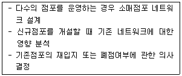
- 레일리모형
- 회귀분석모형
- 입지배정모형
- 시장점유율모형
- MCI모형
(정답률: 35%)
45. 점포의 매출액에 영향을 미치는 요인은 크게 입지요인과 상권요인으로 구분할 수 있다. 이 구분에서 입지요인으로 가장 옳지 않은 것은?
- 고객유도시설 - 지하철 역, 학교, 버스정류장, 간선도로, 영화관, 대형소매점 등
- 교통 - 교통수단, 교통비용, 신호등, 도로 등
- 시계성 - 자연적 노출성, 고객유도시설, 간판, 승용차의 주행방향 등
- 동선 - 주동선, 부동선, 복수동선, 접근동선 등
- 규모 - 인구, 공간범위 등
(정답률: 36%)
3과목: 유통마케팅
46. 고객에 대한 판매자의 바람직한 이해로서 가장 옳지 않은 것은?
- 고객별로 기업에 기여하는 가치 수준이 다르다.
- 고객은 기업에게 다른 고객을 추가로 유인해주는 주체이기도 하다.
- 고객은 제품과 서비스의 개선을 위한 제언을 제공한다.
- 고객은 제품 또는 서비스로부터 더 많은 가치를 얻기 위해 기업과 경쟁한다.
- 고객의 범주에는 잠재적으로 고객이 될 가능성이 있는 가망고객들도 포함될 수 있다.
(정답률: 63%)
47. 유통목표의 달성 성과를 평가하기 위한 방법으로 옳지 않은 것은?
- 소비자 기대치와 비교
- 경로구성원 간 갈등비교
- 업계평균과 비교
- 경쟁사와 비교
- 사전 목표와 비교
(정답률: 60%)
48. 응답자들이 제공하기 꺼리는 민감한 정보를 수집하는 조사방법으로 가장 옳은 것은?
- 관찰조사
- 우편설문조사
- 온라인 서베이
- 개인별 면접
- 표적집단 면접
(정답률: 42%)
49. 몇몇 인기상품의 가격을 인상한 다음 판매감소를 겪고 있는 소매점의 경영자 A는 빠르게 그리고 효율적으로 판매하락을 초래한 상품을 찾아내려고 한다. 다음 중 A가 사용할 조사 방법으로서 가장 옳은 것은?
- 외부 파트너를 활용한 조사
- 내부 판매실적 자료의 활용
- 명품회사의 마케팅 첩보 입수
- 경쟁자의 전략에 관한 정보의 수집
- 명성이 높은 마케팅조사 회사를 통한 조사
(정답률: 66%)
50. “이미 판매한 제품이나 서비스와 관련이 있는 제품이나 서비스를 추가로 판매하는 것”을 의미하는 용어로 가장 옳은 것은?
- 교차판매
- 유사판매
- 결합판매
- 묶음판매
- 상향판매
(정답률: 31%)
51. 서비스스케이프(servicescape)에 대한 설명으로 가장 옳지 않은 것은?
- 서비스스케이프의 품질수준을 측정하기 위해 서브퀄(SERVQUAL)모델이 개발되었다.
- 서비스스케이프를 구성하는 요인 중 디자인 요소는 내부인테리어와 외부시설(건물디자인, 주차장 등)을 포함한다.
- 서비스스케이프를 구성하는 요인 중 주변적 요소는 매장(점포)의 분위기로서 음악, 조명, 온도, 색상 등을 포함한다.
- 서비스스케이프를 구성하는 요인 중 사회적 요소는 종업원들의 이미지, 고객과 종업원간의 상호교류를 포함한다.
- 서비스스케이프가 소비자행동에 미치는 영향을 설명하는 포괄적인 모형들은 일반적으로 자극-유기체-반응(stimulus-organism-response)의 프레임워크를 기초로 한다.
(정답률: 27%)
52. 고객관계관리(CRM, Customer Relationship Management)에 대한 설명으로 가장 옳지 않은 것은?
- 고객에 대한 정보를 활용하여 고객관계를 구축하고 강화시키기 위한 것이다.
- 고객의 고객생애가치(customer lifetime value)를 극대화하는데 활용되고 있다.
- 기존우량 고객과 유사한 특징을 지닌 유망고객을 유치하기 위해 활용되고 있다.
- 기존에 구매하던 제품과 관련된 다른 제품들의 구매를 유도하는 업셀링(up-selling)을 통해 고객관계를 강화 하는 것이다.
- 고객의 지출을 증가시켜 소비점유율(share of wallet)을 높이는데 활용되고 있다.
(정답률: 37%)
53. 아래 글상자에서 설명하는 머천다이징 전략으로 가장 옳은 것은?
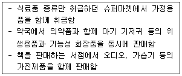
- 크로스 머천다이징(cross merchandising)
- 탈상품화 머천다이징(decommodification merchandising)
- 스크램블드 머천다이징(scrambled merchandising)
- 선택적 머천다이징(selective merchandising)
- 집중적 머천다이징(intensive merchandising)
(정답률: 49%)
54. 단품관리(unit control)의 효과로서 가장 옳지 않은 것은?
- 매장효율성 향상
- 결품감소
- 과잉 재고의 감소
- 명확한 매출기여도 파악
- 취급상품의 수 확대
(정답률: 56%)
55. 상품믹스를 결정할 때는 상품믹스의 다양성, 전문성, 가용성 등을 따져보아야 한다. 이에 대한 설명으로 옳지 않은 것은?
- 다양성이란 한 점포 내에서 취급하는 상품카테고리 종류의 수를 말한다.
- 가용성을 높이기 위해서는 특정 단품에 대해 품절이 발생하지 않도록 재고를 보유하고 있어야 한다.
- 전문성은 특정 카테고리 내에서의 단품의 수를 의미한다.
- 상품믹스를 전문성 위주로 할지, 다양성 위주로 할지에 따라 소매업태가 달라진다.
- 다양성이 높을수록 점포 전체의 수익성은 높아진다.
(정답률: 48%)
56. 아래 글상자에서 설명하고 있는 ㉠ 소매상에 대한 소비자 기대와 ㉡ 소매점의 마케팅믹스를 모두 옳게 나타낸 것은?
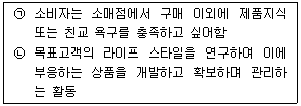
- ㉠ 서비스, ㉡ 정보와 상호작용
- ㉠ 촉진, ㉡ 상품
- ㉠ 정보와 상호작용, ㉡ 머천다이징
- ㉠ 입지, ㉡ 서비스
- ㉠ 점포분위기, ㉡ 공급업자관리
(정답률: 60%)
57. 아래 글상자의 내용 중 협동광고(cooperative advertising)가 상대적으로 중요한 촉진 수단으로 작용하는 상품들을 나열한 것으로 가장 옳은 것은?
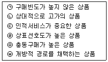
- ㉠, ㉡, ㉢
- ㉡, ㉢, ㉥
- ㉢, ㉣, ㉤
- ㉣, ㉤, ㉥
- ㉢, ㉣, ㉥
(정답률: 34%)
58. 점포 배치 및 디자인과 관련된 설명으로 옳지 않은 것은?
- 자유형 점포배치는 특정 쇼핑경로를 유도하지 않는다.
- 경주로형 점포배치는 고객들이 다양한 매장의 상품을 볼 수 있게 하여 충동구매를 유발하려는 목적으로 활용된다.
- 격자형 점포배치는 소비자들의 제품탐색을 용이하게 하고 동선을 길게 만드는 장점이 있다.
- 매장의 입구는 고객들이 새로운 환경을 둘러보고 적응하는 곳이므로 세심하게 디자인해야 한다.
- 매장 내 사인물(signage)과 그래픽은 고객들의 매장 탐색을 돕고 정보를 제공한다.
(정답률: 39%)
59. 유통마케팅투자수익률에 대한 설명으로 가장 옳은 것은?
- 정성적으로 측정할 수 있는 마케팅 효과만을 측정한다.
- 마케팅투자에 대한 순이익과 총이익의 비율로써 측정한다.
- 마케팅활동에 대한 투자에서 발생하는 이익을 측정한다.
- 고객의 획득과 유지 등 마케팅의 고객 관련 효과를 고려하지 않는다.
- 판매액, 시장점유율 등 마케팅성과의 표준측정치를 이용해 평가할 수는 없다.
(정답률: 43%)
60. 마케팅 커뮤니케이션 수단들에 대한 설명으로 가장 옳지 않은 것은?
- 신뢰성이 높은 매체를 통한 홍보(publicity)는 고객의 우호적 태도를 형성하기 위한 좋은 수단이다.
- 인적판매는 대면접촉을 통하기 때문에 고객에게 구매를 유도하기에 적절한 도구이다.
- 판매촉진은 시험적 구매를 유발하는데 효과적인 도구이다.
- 광고의 목적은 판매를 촉진하기 위한 것이라면, 홍보는 이미지와 대중 관계를 향상시키는데 목적이 있다.
- 광고는 시간과 공간의 제약은 없으나 다른 커뮤니케이션 수단들에 비해 노출당 비용이 많이 소요된다는 단점이 있다.
(정답률: 36%)
61. 아래 글상자의 내용은 상품수명주기에 따른 경로관리 방법을 기술한 것이다. 세부적으로 어떤 수명주기 단계에 대한 설명인가?
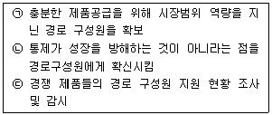
- 도입기
- 성장기
- 성숙기
- 쇠퇴기
- 재도약기
(정답률: 41%)
62. 편의점이 PB상품을 기획하는 이유로 가장 옳지 않은 것은?
- 편의점은 대형마트나 수퍼마켓보다 비싸다는 점포 이미지를 개선시킬 수 있다.
- PB상품이 NB상품에 비해 점포차별화에 유리하다.
- 소량구매 생필품 중심으로 PB상품을 개발하여 매출을 높일 수 있다.
- PB상품이 중소 제조업체를 통해 납품될 경우, NB 상품을 공급하는 대형 제조업체에 비해 계약조건이 상대적으로 유리할 수도 있다.
- NB상품 보다 수익률은 낮지만 가격에 민감한 소비자 욕구에 부응할 수 있다.
(정답률: 37%)
63. 병행수입상품에 대한 설명으로 가장 옳지 않은 것은?
- 상표 등 지적재산권의 보호를 받는 상품이다.
- 미국에서는 회색시장(gray market) 상품이라고 부른다.
- 제조업자나 독점수입업자의 동의 없이 수입한 상품이다.
- 외국에서 적법하게 생산되었기 때문에 위조상품이 아니다.
- 수입업자들은 동일한 병행상품에 대해 서로 다른 상표를 사용해야 한다.
(정답률: 45%)
64. 옴니채널(omni channel) 소매업에 대한 설명으로서 가장 옳은 것은?
- 세분시장별로 서로 다른 경로를 통해 쇼핑할 수 있게 한다.
- 동일한 소비자가 점포, 온라인, 모바일 등 다양한 경로를 통해 쇼핑할 수 있게 한다.
- 인터넷만을 활용하여 영업한다.
- 고객에게 미리 배포한 카달로그를 통해 직접 주문을 받는 소매업이다.
- 인포머셜이나 홈쇼핑채널 등 주로 TV를 활용하여 영업 하는 소매업이다.
(정답률: 57%)
65. 구매시점광고(POP)에 대한 설명으로 가장 옳지 않은 것은?
- 구매하는 장소에서 이루어지는 광고로서 판매촉진 활동에 대한 효과 측정이 용이하다.
- 스토어트래픽을 창출하여 소비자의 관심을 끄는 역할을 한다.
- 저렴한 편의품을 계산대 주변에 진열해 놓는 활동을 포함한다.
- 판매원을 돕고 판매점에 장식효과를 가져다주는 역할을 한다.
- 충동적인 구매가 이루어지는 제품의 경우에는 더욱 강력한 소구 수단이 된다.
(정답률: 32%)
66. 공산품 유통과 비교한 농산물 유통의 특징으로서 가장 옳지 않은 것은?
- 보관시설 등이 잘 갖추어지지 않은 경우 작황에 따른 가격 등락폭이 심하게 나타난다.
- 보관 및 배송 등에 소요되는 유통비용이 상대적으로 더 크다.
- 부패하기 쉽기 때문에 적절한 보관과 신속한 배송 등이 더 중요하다.
- 크기, 품질, 무게 등에 따라 표준화하고 등급화하기가 더 힘들다.
- 가격 변동이나 소득 변동에 따른 수요변화가 더 탄력적이다.
(정답률: 49%)
67. 상품의 진열 방식 중 상품들의 가격이 저렴할 것이라는 기대를 갖게 하는데 가장 효과적인 진열방식은?
- 스타일, 품목별 진열
- 색상별 진열
- 가격대별 진열
- 적재진열
- 아이디어 지향적 진열
(정답률: 44%)
68. 다음 중에서 새로운 소매업태가 나타나게 되는 이유를 설명하는 이론으로 가장 옳지 않은 것은?
- 소매수명주기 이론
- 수레바퀴 이론
- 소매 아코디언 이론
- 소매인력이론
- 변증법적 이론
(정답률: 40%)
69. 매장 외관인 쇼윈도(show window)에 대한 설명 중 가장 옳지 않은 것은?
- 매장 외관을 결정짓는 요소 중 하나로 볼 수 있다.
- 돌출된 형태의 쇼윈도의 경우 소비자를 입구 쪽으로 유도하는 효과가 있다.
- 지나가는 사람들의 시선을 끌어 구매욕구를 자극하는 효과가 있다.
- 설치형태에 따라 폐쇄형, 반개방형, 개방형, 섀도박스(shadow box)형이 있다.
- 제품을 진열하는 효과는 있으나 점포의 이미지를 표현할 수는 없다.
(정답률: 63%)
70. 다음 중 모든 구매자들에게 단일의 가격을 책정하는 것이 아닌 개별고객의 특징과 욕구 및 상황에 맞추어 계속 가격을 조정하는 가격전략은?
- 초기 고가격 전략
- 시장침투 가격전략
- 세분시장별 가격전략
- 동태적 가격전략
- 제품라인 가격전략
(정답률: 43%)
4과목: 유통정보
71. 아래 글상자의 ( ) 안에 들어갈 용어로 가장 옳은 것은?
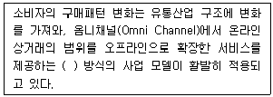
- O2O(Online to Offline)
- O2O(Online to Online)
- O2M(One to Multi spot)
- O2M(One to Machine)
- O2C(Online to Customer)
(정답률: 59%)
72. 유통업체가 POS(point of sales)시스템을 도입하여 얻을 수있는 효과로 가장 옳지 않은 것은?
- 상품 계산을 위해 판매원이 상품정보를 등록하는 시간을 단축하여 고객대기시간 단축 가능
- 판매원의 수작업에 의한 입력 누락, 반복 입력 등과 같은 입력 오류 감소
- 자동발주시스템(Electronic Order System: EOS)과 연계하여 주문관리, 재고관리, 판매관리의 정보를 통한 경영활동 효율성 확보
- 신속한 고객 정보의 수집과 관리를 통해 합리적 판촉 전략 수립 및 고객 만족도 개선
- 경쟁 유통업체의 제품 구성 및 판매 동향 분석을 통한 경쟁력 제고
(정답률: 56%)
73. 아래 글상자에서 설명하고 있는 용어를 나열한 것으로 가장 옳은 것은?
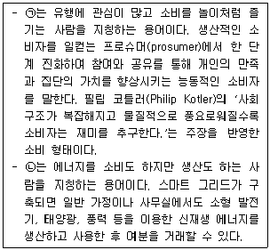
- ㉠ 모디슈머, ㉡ 스마트너
- ㉠ 플레이슈머, ㉡ 스마트너
- ㉠ 플레이슈머, ㉡ 에너지 프로슈머
- ㉠ 트랜드슈머, ㉡ 에너지 프로슈머
- ㉠ 트랜드슈머, ㉡ 스마트 프로슈머
(정답률: 50%)
74. 아래 글상자의 ㉠, ㉡에 해당되는 각각의 용어로 가장 옳은 것은?
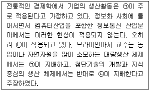
- ㉠ 수확체증의 법칙, ㉡ 수확불변의 법칙
- ㉠ 수확체증의 법칙, ㉡ 수확체감의 법칙
- ㉠ 수확체감의 법칙, ㉡ 수확불변의 법칙
- ㉠ 수확체감의 법칙, ㉡ 수확체증의 법칙
- ㉠ 수확불변의 법칙, ㉡ 수확체감의 법칙
(정답률: 44%)
75. EDI 시스템에 대한 설명으로 가장 옳지 않은 것은?
- EDI 시스템은 데이터를 효율적으로 교환하기 위해 전자 문서표준을 이용해 데이터를 교류하는 시스템이다.
- EDI 시스템은 기존 서류 작업에 비해 문서의 입력 오류를 줄여주는 장점이 있다.
- EDI 시스템은 국제표준이 아닌, 기업간 상호 협의에 의해 만들어진 규칙을 따른다.
- EDI 시스템은 종이 문서 없는 업무 환경을 구현해 주는 장점이 있다.
- EDI 시스템은 응용프로그램, 네트워크 소프트웨어, 변환 소프트웨어 등으로 구성된다.
(정답률: 55%)
76. QR코드의 장점으로 가장 옳지 않은 것은?
- 작은 공간에도 인쇄할 수 있다.
- 방향에 관계없는 인식능력이 있다.
- 바코드에 비해 많은 용량의 정보를 저장할 수 있다.
- 훼손에 강하며 훼손 시 데이터 복원력이 매우 좋다.
- 문자나 그림 등의 이미지가 중첩된 경우에도 인식률이 매우 높다.
(정답률: 50%)
77. 아래 글상자에서 설명하는 용어로 가장 옳은 것은?
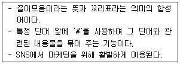
- 스크롤링(Scrolling)
- 롱테일의 법칙(Long Tail Theory)
- 크롤링(Crawling)
- 해시태그(Hashtag)
- 둠스크롤링(Doomscrolling)
(정답률: 64%)
78. 데이터마이닝에서 사용하는 기법과 그에 대한 설명으로 가장 옳지 않은 것은?
- 추정 – 연속형이나 수치형으로 그 결과를 규정, 알려지지 않은 변수들의 값을 추측하여 결정하는 기법
- 분류 - 범주형 자료이거나 이산형 자료일 때 주로 사용하며, 이미 정의된 집단으로 구분하여 분석하는 기법
- 군집화 – 기존의 정의된 집단을 기준으로 구분하고 이와 유사한 자료를 모으고, 분석하는 기법
- 유사통합 – 데이터로부터 규칙을 만들어내는 것으로 어떠한 것들이 함께 발생하는지에 대해 결정하는 기법
- 예측 – 미래의 행동이나 미래 추정치의 예측에 따라 구분되는 것으로 분류나 추정과 유사 기법
(정답률: 25%)
79. 아래 글상자의 괄호 안에 공통적으로 들어갈 용어로 가장 옳은 것은?
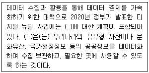
- 데이터 댐
- 국가DW
- 빅데이터프로젝트
- 대한민국AI
- 디지털 트윈
(정답률: 42%)
80. 오늘날 공급사슬관리는 IT의 지원 없이 작동할 수 없다. 공급사슬관리에 일어난 주요 변화로 옳지 않은 것은?
- 공급자 중심에서 고객중심으로 - 비용보다는 유연한 대응력 즉 민첩성이 핵심요인
- 풀(pull)관행에서 푸시(push)관행으로 - 생산 풀로부터 소비자 주문 또는 구매를 근거로 하는 푸시관행으로 이동
- 재고에서 정보로 - 실질 수요에 대한 더 나은 가시성 확보가 중요
- 운송과 창고관리에서 엔드투엔드 파이프라인관리가 강조 - 가시성과 시간단축 중요
- 기능에서 프로세스로 - 급변하는 환경에 다기능적이고 시장지향적인 프로세스에 초점
(정답률: 54%)
81. 국가종합전자조달 사이트인 나라장터를 전자상거래 거래 주체별 모델로 구분하였을 때 가장 옳은 것은?
- B2B
- G2B
- G4C
- B2C
- C2C
(정답률: 49%)
82. 대칭키 암호화 방식에 해당되지 않는 것은?
- IDEA(International Data Encryption Algorithm)
- SEED
- DES(Data Encryption Standard)
- RSA(Rivest Shamir Adleman)
- RC4
(정답률: 32%)
83. 공급사슬관리를 위한 정보기술로 적절성이 가장 낮은 것은?
- VMI(Vendor Managed Inventory)
- RFID(Radio-Frequency Identification)
- PBES(Private Branch Exchange Systems)
- EDI(Electronic Data Interchange)
- CDS(Cross Docking Systems)
(정답률: 36%)
84. 지식경영을 위한 자원으로써 지식을 체계화하기 위해 다양한 분류 방식을 활용해 볼 수 있다. 다음 중 분류 방식과 그 내용에 대한 설명으로 가장 옳지 않은 것은?
- 도서관형 분류 - 알파벳/기호로 하는 분류
- 계층형 분류 - 대분류·중분류·소분류로 분류
- 인과형 분류 - 원인과 결과 관계로 분류
- 요인분해형 분류 - 의미 네트워크에 기반하여 공간적으로 의미를 구성
- 시계열적 분류 - 시계열적으로 과거, 현재, 미래의 사상, 의의의 변화를 기술
(정답률: 56%)
85. 빅데이터의 핵심 특성 3가지를 가장 바르게 제시한 것은?
- 가치, 가변성, 복잡성
- 규모, 속도, 다양성
- 규모, 가치, 복잡성
- 가치, 생성 속도, 가변성
- 규모, 가치, 가변성
(정답률: 49%)
86. 고객관리를 위해 인터넷 쇼핑몰을 운영하는 A사는 웹로그 분석을 실시하고 있다. 아래 글상자의 ( )안에 들어갈 용어로 가장 옳은 것은?
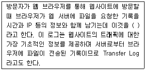
- 리퍼럴 로그(referrer log)
- 에이전트 로그(agent log)
- 액세스 로그(access log)
- 에러 로그(error log)
- 호스트 로그(host log)
(정답률: 56%)
87. 유통업체의 관리문제를 해결하기 위해 활용되는 의사결정 지원시스템 모델 중 수학적 모형으로 작성하여 그 해를 구함으로써 최적의 의사결정을 도모하는 수리계획법의 예로 가장 옳지 않은 것은?
- 시뮬레이션(Simulation)
- 목표계획법(Goal Programming)
- 선형계획법(Linear Programming)
- 정수계획법(Integer Programming)
- 비선형계획법(Non-Linear Programming)
(정답률: 32%)
88. 파일처리시스템과 비교하여 데이터베이스시스템의 특징을 설명한 것으로 가장 옳지 않은 것은?
- 특정 응용프로그램을 활용해 개별 데이터를 생성하고 저장하므로 데이터를 독립적으로 관리할 수 있다.
- 조직내 데이터의 공유를 통해 정보자원의 효율적 활용이 가능하다.
- 데이터베이스에 접근하기 위해 인증을 거쳐야 하기에 불법적인 접근을 차단하여 보안관리가 용이하다.
- 프로그램에 대한 데이터 의존성이 감소하게 됨으로써 데이터의 형식이나 필드의 위치가 변화해도 응용프로그램을 새로 작성할 필요가 없다.
- 표준화된 데이터 질의어(SQL)를 이용하여 필요한 데이터에 쉽게 접근하고 정보를 생성할 수 있다.
(정답률: 27%)
89. 디지털 시대의 경영환경 특징으로 가장 옳지 않은 것은?
- 무형의 자산보다 유형의 자산이 중시된다.
- 지식상품이 부상하고 개인의 창의력이 중시된다.
- 정보의 전달 속도가 빨라 제품수명주기가 단축된다.
- 기술발전 속도가 빠를 뿐만 아니라 사업 범위가 글로벌화 되어 경쟁이 심화된다.
- 기업 간 경쟁이 심화되어 예측이 어려워짐으로써 복잡계시스템으로서의 경영이 요구된다.
(정답률: 59%)
90. 전자금융거래시 간편결제를 위한 QR코드 결제 표준에 대한 내용으로 가장 옳지 않은 것은?
- 고정형QR 발급시 별도 위변조 방지 조치(특수필름부착, 잠금장치 설치 등)를 갖추어야 한다.
- 변동형 QR은 보안성 기준을 충족한 앱을 통해 발급하며 위변조 방지를 위해 1분 이내만 발급이 유지되도록 규정한다.
- 자체 보안기능을 갖추어야 하며 민감한 개인·신용정보 포함을 금지하고 있다.
- 고정형 QR은 소상공인 등이 QR코드를 발급·출력하여 가맹점에 붙여두고, 소비자가 모바일 앱으로 QR코드를 스캔하여 결제처리하는 방식이다.
- 가맹점주는 가맹점 탈퇴·폐업 즉시 QR코드 파기 후 가맹점 관리자에게 신고해야 한다.
(정답률: 36%)